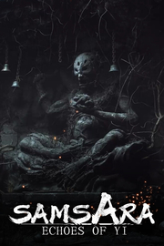

Echoes of Yi : Samsara
Detalles
|  | |
| Tiempo de juego | No Jugado |
| Última actividad | Nunca |
| Añadido | 5/1/2025 11:33:05 |
| Modificado | 5/1/2025 11:45:58 |
| Estado de finalización | Not Played |
| Librería | Playnite |
| Fuente | 2TB DATOS |
| Plataforma | PC (Windows) |
| Fecha de lanzamiento | |
| Puntuación de la Comunidad | 57 |
| Puntuación de la Crítica | |
| Puntuación de usuario | |
| Género | Acción Aventura Indie Rol |
| Desarrollador | Runmeng |
| Editor | Runmeng |
| Característica | Cloud Saves Compat. Total Con Mando Logros De Préstamo Familiar Un Jugador |
| Enlaces | Punto de encuentro Discusiones Guías Noticias Página de la tienda PCGamingWiki Logros |
| Tag | 3D Acción Acción y aventura Artes marciales Aventura Combate Drama Exploración Fantasía Finales múltiples Hack and slash Lineales Luchador en 3D Realistas Roguelike de acción Rol Rol de acción Tercera persona Tipo «Dark Souls» Un jugador |
Descripción
"Yìwénlù: Lúnhuí" es un juego de aventuras de acción con estilo chino que tiene como núcleo la batalla, la exploración y la resolución de enigmas. En el juego, llevas el poder de la "Semilla Sagrada" del Árbol Sagrado, y posees la capacidad de renacer infinitas veces. Después de que el Árbol Sagrado apareció en el mundo y causó un gran desastre en la humanidad, decidiste seguir y buscar a tu maestro, y cortar el Árbol Sagrado.
Entraste en Lingxu, el lugar donde se encuentra el Árbol Sagrado de Jianmu. Sentiste un mundo en el que, después de que el ciclo del Árbol Sagrado fue destruido, las emociones estaban desordenadas, la maldad se desató y las raíces del árbol se pudrieron. Este camino está lleno de exploraciones y retos. Debes recopilar habilidades de artes marciales y ofrendas, y utilizar la energía que cayó del Árbol Sagrado para mejorar constantemente a ti mismo. Finalmente, en el camino de buscar a tu maestro, conociste sobre las guerras de la Tribú Wu, los sucesos pasados del Árbol Sagrado y el misterio de tu propia ascendencia.

Cortar el Árbol Sagrado con la espada, la reencarnación de la Semilla Sagrada, la oscuridad que devora para siempre.
Ritmo preciso y duro enfrentamiento

A través del rápido cambio entre ataque y defensa y del contraataque preciso, acumulas la barra de aire del enemigo, haciendo que su defensa se derrumbe. Una vez que capturas la oportunidad, el jugador puede lanzar un ataque mortal y sentir la intensa experiencia de batalla en la que el ataque y la defensa son uno solo.
Presentación perfecta del tesoro cultural

El juego está profundamente integrado en la cultura tradicional china, como los sitios arqueológicos de Sanxingdui y la cultura del ópera de Pekín, entre otros. El diseño de los Jefes (BOSS) y la disposición de las escenas están llenos del sabor único de la cultura tradicional.
Artes tradicionales y esplendor en la batalla

Los jugadores pueden aprender y utilizar una variedad de artes marciales tradicionales, como el Taichi, la técnica de la espada y la técnica de la lanza. Además, en el juego también se integran ricos relatos populares, costumbres tradicionales y patrimonios culturales.
Características del juego:
Batalla con ritmo de alta velocidad:
Al enfrentarse a poderosos enemigos, experimentar una batalla con un gran sentido de presión y sentir la lucha de vida o muerte entre los destellos de espadas y dagas.
Contenido de exploración abundante:
En el juego se integran elementos como anécdotas populares, costumbres tradicionales y patrimonios culturales. Durante el proceso de explorar el Árbol Sagrado de Jianmu en Sanxingdui, los jugadores se sumergirán en una variedad de costumbres tradicionales y maravillas culturales, sintiendo un mundo cargado de historia.
Diseño musical único:
La música de fondo del juego utiliza instrumentos tradicionales chinos como el suona, el pipa, el guqin y el guzheng, combinados con los sonidos únicos de los instrumentos de percusión, presentando el encanto de la música tradicional china.
Sistema de adiestramiento sencillo y fácil de entender:
Los jugadores pueden aprender habilidades y, en el juego, experimentar de verdad los estilos y técnicas de las artes marciales chinas, convirtiéndose paulatinamente en maestros de las artes marciales y enfrentándose a enemigos cada vez más poderosos.
Experiencia de argumento profunda: Seguir los pasos del Maestro de la Espada, emprender un viaje de aventuras y experimentar una historia en la que la humanidad y las emociones están entretejidas.
Yìwénlù: Lúnhuí" es un juego de acción de wuxia oscuro que integra la cultura tradicional china. Los jugadores interpretarán al primer discípulo del Maestro de la Espada, derrotarán a poderosos enemigos en batallas de ataque y defensa de alta velocidad, y desvelarán la conspiración debajo del Árbol Sagrado de Jianmu. ¿Elegir enfrentarse frontalmente a las dificultades o dejarse llevar por las corrientes? Todas las decisiones están en tus manos.